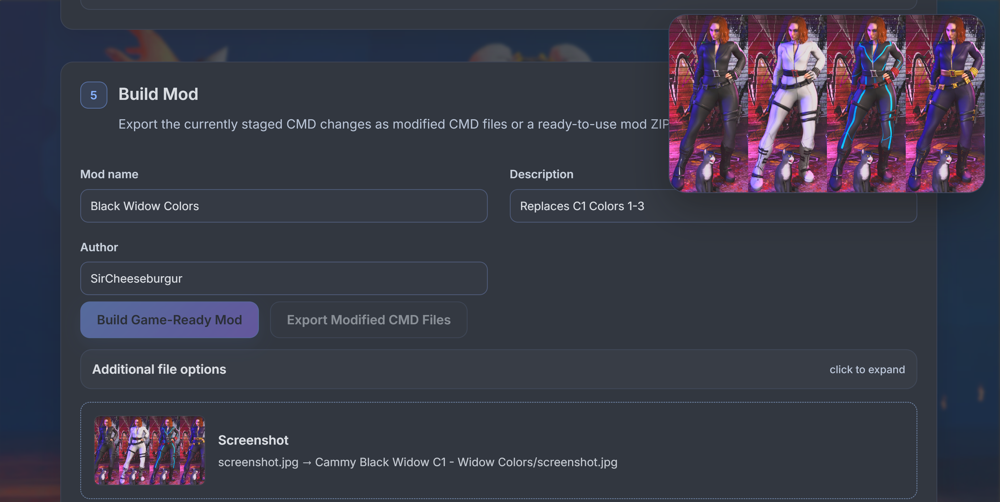

ZIP
Edit existing mod archives
Load one mod ZIP, retain its metadata, screenshot, and unrelated files, then replace only edited CMD palettes on export.
What shipped with SF6 CMD Color Sync and what is planned next.
v1.1 expands Color Sync from a CMD editor into a safer existing-mod workflow: import full archives, preserve their contents, add missing palettes, and restore earlier color states.
Load one mod ZIP, retain its metadata, screenshot, and unrelated files, then replace only edited CMD palettes on export.
Keep the palettes already supplied by a costume mod and fill only its missing Colors 1–10 from SF6 Colors.zip.
Use manifest-backed original and dated pre-export snapshots stored inside backup_colors.
Keep visual CMD values primary while showing the decoded linear RGB value used by REFramework at runtime.
Inspect DX CMD files with explicit reference-only labeling when edits may not apply in game.
Remember export folders in supported browsers, manage duplicate names, and preserve existing modinfo fields.
Jump through the numbered workflow from a responsive section rail or with safe 1–5 keyboard shortcuts.
Randomize every active color in one material while preserving alpha and ignoring inactive slots.

Released 11 August 2026. v1.1 is the current version of SF6 CMD Color Sync.
The first public version established the client-side CMD editing workflow. Files remain in the browser and edits patch known offsets without rebuilding the RSZ graph.
Load palettes for one character and outfit, then inspect material CustomizeColor slots and inactive states.
Edit visual RGBA values in place with swatches, friendly names, exact hex input, and a custom picker.
Copy one active source slot to one or more target slots within the active CMD.
Repeat one material/slot mapping across selected palettes while each CMD supplies its own source value.
Replace exact RGBA matches in the active CMD, inspect Current Changes, and revert before export.
Download modified CMDs or build a Fluffy Manager-ready ZIP with modinfo and an optional screenshot.